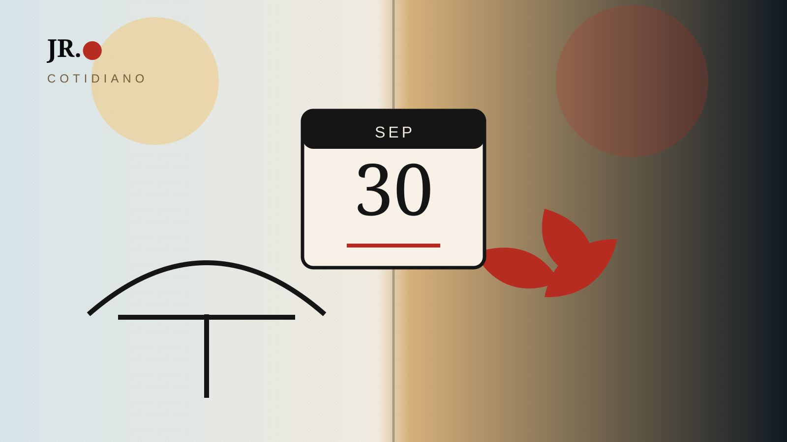

Quando setembro termina, o calendário muda imediatamente, mas o Japão não vira outono de uma vez. Outubro começa dentro da estação, só que temperatura, paisagem e rotina mudam em ritmos diferentes conforme região, altitude e ano.

Outubro começa; o outono já começou
No calendário sazonal japonês moderno, setembro, outubro e novembro costumam compor o outono. Isso não significa que o calor desapareça em 1º de outubro, especialmente em boa parte de Honshu, Shikoku e Kyushu.
Não existe um único outubro
Hokkaido esfria antes. Áreas de montanha sentem a mudança com mais rapidez. Em cidades mais ao sul ou em regiões baixas, a transição pode ser gradual. Um mesmo mês pode parecer estações diferentes dependendo do lugar.
As cores não chegam ao mesmo tempo
As folhas de outono aparecem primeiro em áreas frias e altas e avançam conforme clima, latitude e altitude. Por isso, previsões de koyo costumam variar bastante por região.
A estação também aparece nas vitrines
Antes de uma paisagem inteira mudar de cor, o cotidiano já dá sinais: cardápios sazonais, alimentos de colheita, doces limitados, vitrines e eventos culturais marcam a passagem do mês.
Como observar melhor
Em vez de procurar “o outono japonês” como imagem única, vale reparar em camadas: temperatura à noite, alimentos, céu, roupa nas lojas, eventos locais e pequenos ajustes na rotina.